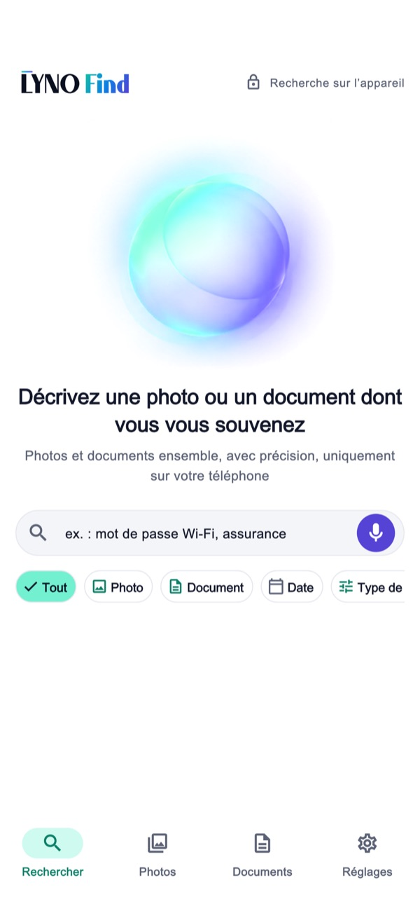

Tirer le meilleur de LYNO Find
LYNO Find retrouve par des mots les photos et documents de votre téléphone : ce que montre une photo, le texte qu'elle contient et le contenu des documents. Tout est analysé et recherché uniquement sur votre téléphone. Ce guide suit le guide de l'app, avec de vrais écrans.
